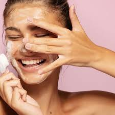

OCZYSZCZANIE
Dokładne oczyszczanie twarzy jest uważane za podstawę pielęgnacji skóry. Jeśli zaniedbujesz ten etap, na twarzy szybko pojawią się objawy zmęczenia, przyspieszonego starzenia i niedoskonałości. • Twarz można oczyszczać na sucho i na mokro (z użyciem wody). Ważne, aby robić to dokładnie, systematycznie i nie podrażniać przy tym skóry. • Pierwszym krokiem do dokładnego oczyszczania jest zmycie makijażu, ostatnim nałożenie toniku, który przywraca skórze prawidłowe pH i przygotowuje ją do przyjęcia kremu. • Skóra tłusta i trądzikowa wymaga głębokiego oczyszczania, którego celem jest odblokowanie ujść gruczołów łojowych z nadmiaru sebum i zanieczyszczeń.
Jak oczyszczać twarz?
Dwuetapowe oczyszczanie cery najlepiej wykonywać wieczorem. Dokładne mycie twarzy w dwóch etapach pozwoli pozbyć się zgromadzonego w czasie dnia łoju, potu, resztek kosmetyków pielęgnacyjnych i kolorowych oraz zanieczyszczeń środowiska. Istotne jest, aby demakijaż i mycie było delikatne, ale również efektywne i dokładne. Dwuetapowe oczyszczanie cery jest bardzo popularne wśród Koreanek i to dzięki nim teraz ten sposób stosują kobiety na całym świecie.
Dwuetapowe oczyszczanie twarzy to w skrócie: Etap 1 - demakijaż (za pomocą mlecza, płynu milcealarnego lub olejku) Etap 2 - mycie twarzy (przy pomocy żelu, emulsji lub pianki)
Produkt, którego używamy - żel, pasta lub pianka do mycia twarzy. Kiedy już powierzchnia naszej skóry została oczyszczona i pory są odsłonięte - możemy przejść do ich oczyszczenia. W tym celu stosujemy któryś z wyżej wymienionych produktów. Jeśli chodzi o żele do mycia twarzy polecam